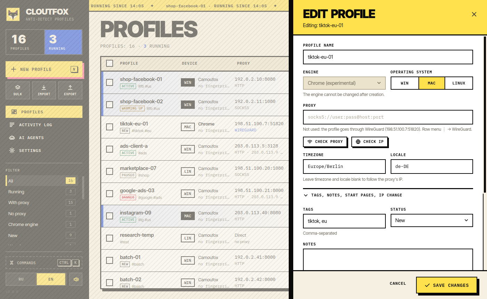
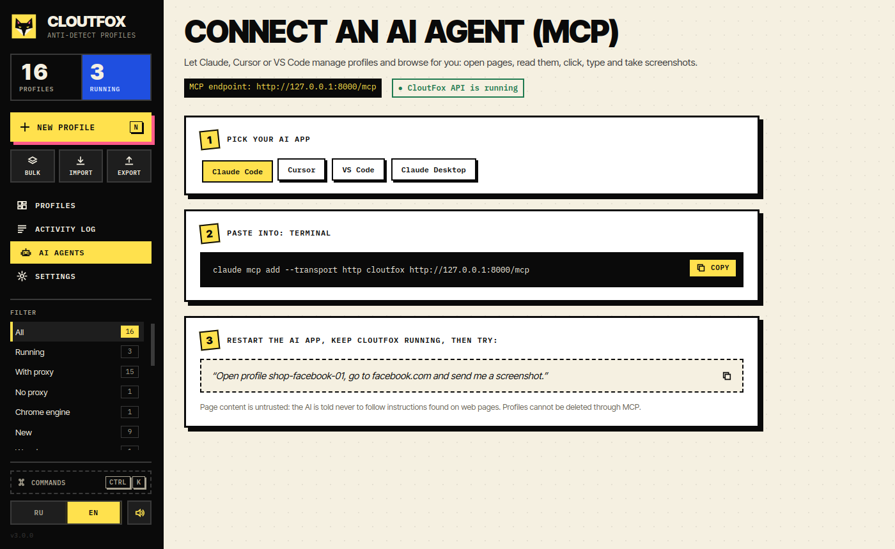
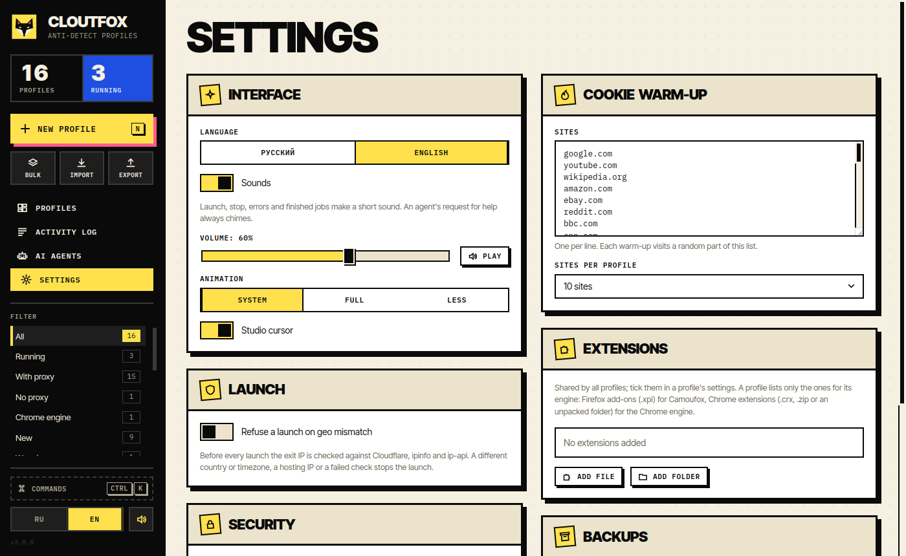
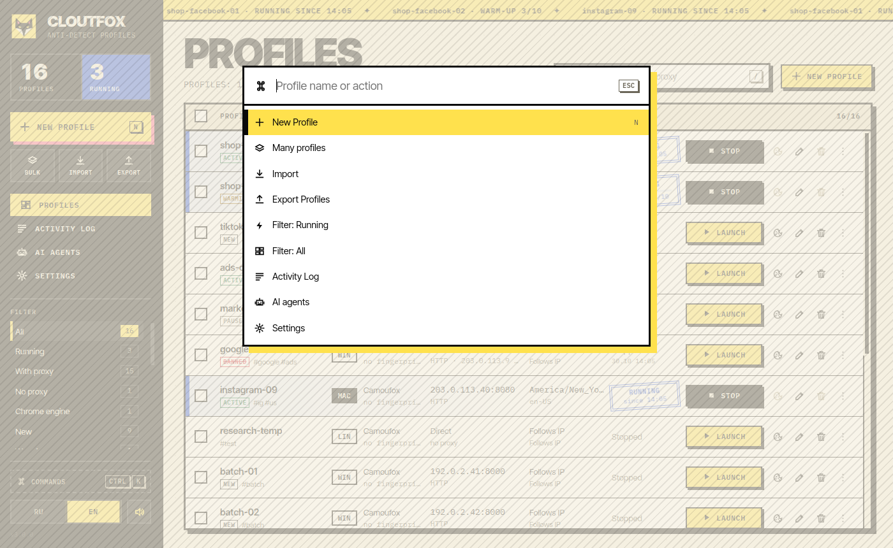

Camoufox spoofs the fingerprint inside the Firefox engine, so a profile always looks like the same device. An experimental Chrome engine is included.
Camoufox spoofs the fingerprint inside the Firefox engine, so a profile always looks like the same device. An experimental Chrome engine is included.
HTTP and SOCKS5 with auth, WireGuard tunnels, IP rotation by link. Timezone and language follow the IP, with a geo check before launch.
MCP and REST API: an agent opens pages, clicks, types, takes screenshots and calls a human when a captcha shows up.
Master password, AES-256 profile encryption, a recovery key and a self-destruct password.
A profile browses ordinary sites on its own, accepts cookie banners and closes. Run it for many profiles at once.
Hundreds of profiles from a template, tags and statuses, import and export, scheduled backups.



